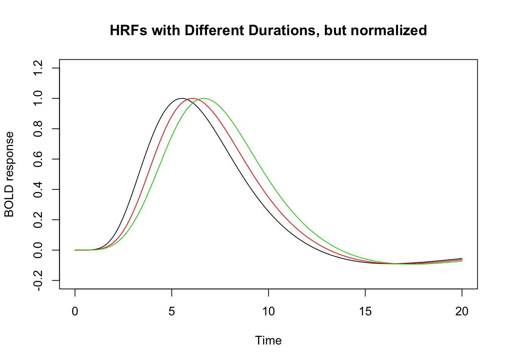
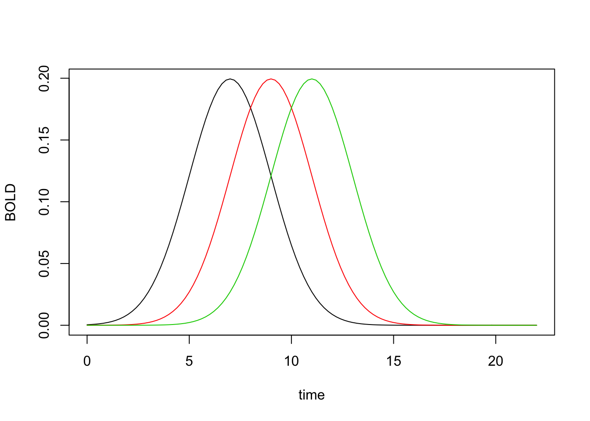

Hemodynamic Response Functions
Bradley R. Buchsbaum
2019-09-22
Source:vignettes/hemodynamic_response.Rmd
hemodynamic_response.RmdHemodynamic response function
A hemodynamic response function (HRF) is used to model the temporal evoluation of an fMRI response to an experimental “event”. An HRF is a function of time and peaks 4-6s afer the event onset.
There are a number of pre-defined HRFs in fmrireg that make it easy to work with them. For example, we can use the SPM “canonical” HRF as follows:
library(magrittr)
## SPM canonical hrf
f1 <- hrf_blocked(hrf_spmg1, width=1)
## Gaussian hrf with default parameters (mean=6, sd=1.5)
f2 <- hrf_blocked(hrf_gaussian, width=1)
plot(seq(0,20,by=.1), f1(seq(0,20,by=.1)), type="l", xlab="Time", ylab="BOLD response", main="Gaussian and SPM Canonical HRF", ylim=c(-.2, 2.2))
lines(seq(0,20,by=.1), f2(seq(0,20,by=.1)), type="l", col=2)
Changing Default Parameters
## the 'gen_hrf' function takes an hrf function and returns a new function substituting the supplied parameters as arguments.
hrf_7_3 <- gen_hrf(hrf_gaussian, mean=7, sd=3)
hrf_5_2 <- gen_hrf(hrf_gaussian, mean=5, sd=2)
hrf_4_1 <- gen_hrf(hrf_gaussian, mean=4, sd=1)
vals1 <- hrf_7_3(seq(0,20,by=.1))
vals2 <- hrf_5_2(seq(0,20,by=.1))
vals3 <- hrf_4_1(seq(0,20,by=.1))
## notice that that each function is scaled so that it's highest value = 1.
plot(seq(0,20,by=.1), vals1, type="l", xlab="Time", ylab="BOLD response", ylim=range(c(vals1, vals2, vals3)), main="Three Gaussian HRFs")
lines(seq(0,20,by=.1), vals2, type="l", col=2)
lines(seq(0,20,by=.1), vals3, type="l", col=3)
Setting the duration of a response
We can also set the duration of the input stimulus as follows:
hrf_w1 <- hrf_blocked(hrf_spmg1, width=1)
hrf_w2 <- hrf_blocked(hrf_spmg1, width=2)
hrf_w3 <- hrf_blocked(hrf_spmg1, width=3)
time <- seq(0,20,by=.1)
plot(time, hrf_w1(time), type="l", xlab="Time", ylab="BOLD response", ylim=range(0, 6), main="HRFs with Different Durations")
lines(time, hrf_w2(time), type="l", col=2)
lines(time, hrf_w3(time), type="l", col=3)By default an increase in the duration results in the summation of a series of shifted responses, which is consistent with the notion that the hemodyamic response “adds up” or accumulates over time. But we can disable this adding behavior by setting summate=FALSE. This is useful if one only wants to change the width of an HRF without changing its amplitude.
hrf_w1 <- hrf_blocked(hrf_spmg1, width=2, summate=FALSE)
hrf_w2 <- hrf_blocked(hrf_spmg1, width=4, summate=FALSE)
hrf_w3 <- hrf_blocked(hrf_spmg1, width=6, summate=FALSE)
time <- seq(0,24,by=.1)
plot(time, hrf_w1(time), type="l", xlab="Time", ylab="BOLD response", ylim=c(0,.25), main="Non-Summating HRFs with Different Durations ")
lines(time, hrf_w2(time), type="l", col=2)
lines(time, hrf_w3(time), type="l", col=3)
If we want the peak of the HRF to equal 1, we use the normalize argument as follows:
hrf_w1 <- hrf_blocked(hrf_spmg1, width=2, summate=FALSE, normalize=TRUE)
hrf_w2 <- hrf_blocked(hrf_spmg1, width=4, summate=FALSE, normalize=TRUE)
hrf_w3 <- hrf_blocked(hrf_spmg1, width=6, summate=FALSE, normalize=TRUE)
time <- seq(0,24,by=.1)
plot(time, hrf_w1(time), type="l", xlab="Time", ylab="BOLD response", ylim=c(0,1.1), main="Normalized and Non-Summating HRFs with Different Durations ")
lines(time, hrf_w2(time), type="l", col=2)
lines(time, hrf_w3(time), type="l", col=3)Multivariate HRF: B-splines and Derivatives
Sometimes we want to model an event with multiple “basis functions”. In this case the HRF is a function from time -> d-dimensional vector, where d is the dimension of the basis set.
## A third degree B-Spline with four bases.
hrf_bs_4 <- gen_hrf(hrf_bspline, N=4)
time <- seq(0,20, by=.1)
bmat1 <- hrf_bs_4(time)
matplot(time, bmat1, xlab="Time", ylab="BOLD Response", type='l', main="Bspline HRF basis set (N=4)")## A first degree B-Spline with 12 bases.
hrf_bs_12 <- gen_hrf(hrf_bspline, degree=1, N=12)
bmat1 <- hrf_bs_12(time)
matplot(time, bmat1, xlab="Time", ylab="BOLD Response", type='l', main="Bspline HRF basis set (N=12)")
## the SPM + first derivative is a "built-in" HRF function.
bmat1 <- HRF_SPMG2(time)
matplot(time, bmat1, xlab="Time", ylab="BOLD Response", type='l', main="SPM + first derivative")## the SPM + first derivative + second derivative is a "built-in" HRF function.
bmat1 <- HRF_SPMG3(time)
matplot(bmat1, xlab="Time", ylab="BOLD Response", type='l', main="SPM + 1st and 2nd derivative")Creating “lagged” and “blocked” HRFs
In some cases, it might be useful to create an HRF function that has a temporal offset (a “lag” or “delay”). We might also want to create an HRF that has a fixed width or duration that is larger than zero. Below are examples of suched lagged and blocked HRFs.
## constructing a series of lagged HRFs
hrf_lag_1 <- hrf_gaussian %>% gen_hrf_lagged(1)
hrf_lag_3 <- hrf_gaussian %>% gen_hrf_lagged(3)
hrf_lag_5 <- hrf_gaussian %>% gen_hrf_lagged(5)
time <- seq(0,22,by=.2)
plot(time, hrf_lag_1(time), type='l', xlab="time", ylab="BOLD")
lines(time, hrf_lag_3(time), col=2)
lines(time, hrf_lag_5(time), col=3)## constructing lagged and blocked HRFs
hrf_block_1 <- hrf_gaussian %>% hrf_lagged(1) %>% hrf_blocked(width=1, normalize=TRUE)
hrf_block_3 <- hrf_gaussian %>% hrf_lagged(3) %>% hrf_blocked(width=3, normalize=TRUE)
hrf_block_5 <- hrf_gaussian %>% hrf_lagged(5) %>% hrf_blocked(width=5, normalize=TRUE)
plot(time, hrf_block_1(time), type='l', xlab="time", ylab="BOLD")
lines(time, hrf_block_3(time), col=2)
lines(time, hrf_block_5(time), col=3)Constructing a custom basis set using a set of lagged HRFs
Rather than using a b-spline basis set, we could construct our own set of functions using a combination of lagged and/or blocked HRFs. Suppose we want a series of shifted regressor functions that span a 20s window. We can use a set of shifted hrfs to achieve this.
hrf_set <- do.call(gen_hrf_set,
lapply(seq(0,20,by=2), function(i) { hrf_gaussian %>% hrf_lagged(i) %>% HRF(name=paste0("lag_", i)) }))
matplot(hrf_set(0:36), type='l', xlab="Time", ylab="BOLD Activity")